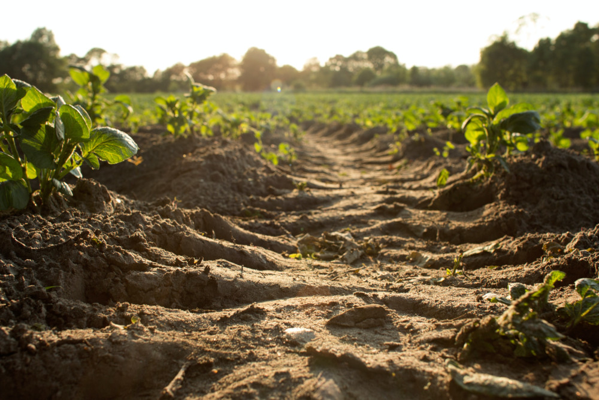
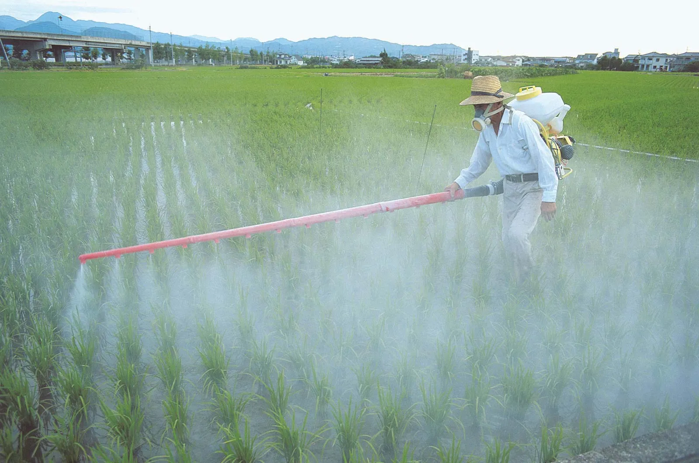
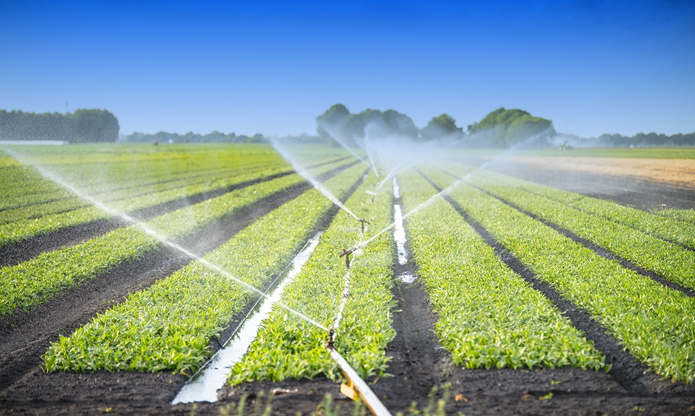
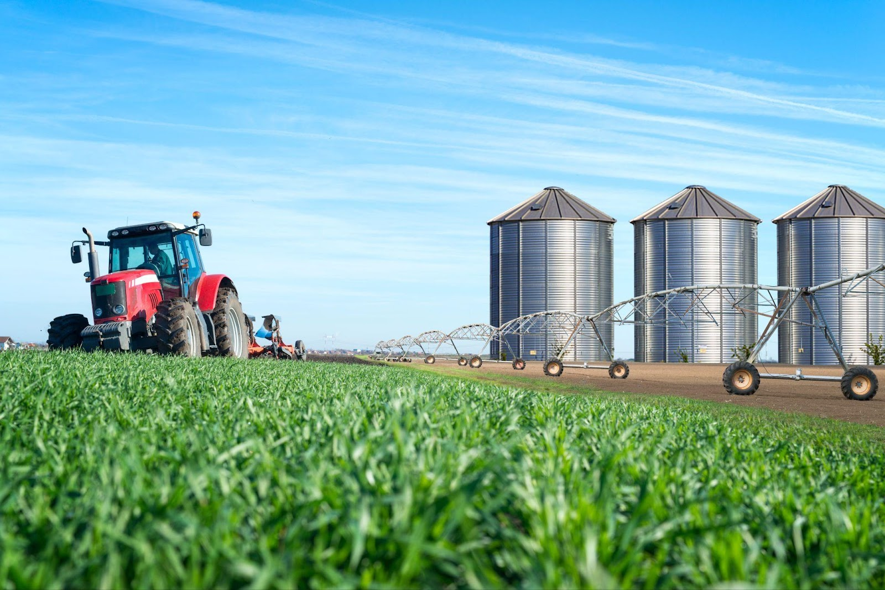
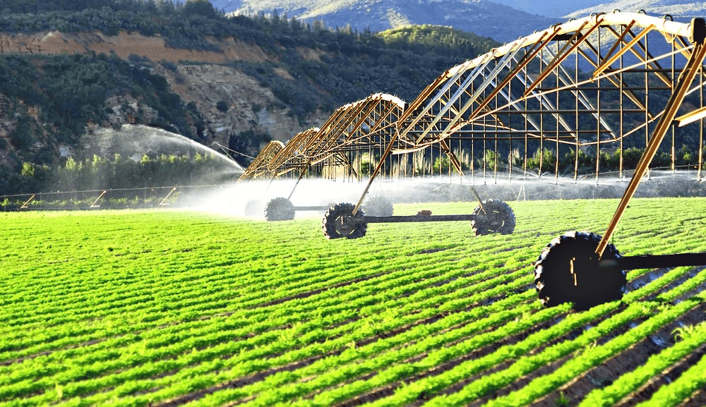
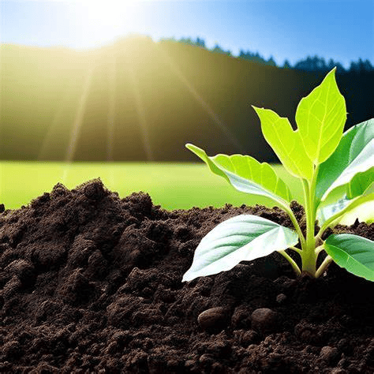

How to protect soil from erosion?
Use cover crops, contour farming, and mulching techniques to prevent soil erosion. Reduce soil erosion. Keep it planted and mulched. Soil erosion is a concern not only for its impacts on plant growth, but also for its impacts to water quality. Soil is a valuable natural resource that nourishes and supports plant growth among many other things. When soil is left bare and exposed, wind and water can erode it. Sediments that are transported to storm drains and surface waters can choke aquatic life and increase water temperatures. Various pollutants such as bacteria, nutrients and heavy metals may also be attached to these sediments, further degrading water quality.
 SourceBest quality and quantity of insecticides, pesticides, and all materials needed for different crops
Use bio-pesticides and government-approved chemicals for better crop protection. Pesticides are a critical tool for farmers and agricultural professionals. These substances kill and repel pests or other growths that harm crops. In turn, crops stay healthier and don’t get destroyed by these external forces. With pesticides, farmers can produce higher growth yields and protect their crops more efficiently. Each pesticide has its own applications and benefits. And with so many pesticide types available, picking one for your crops can sometimes seem overwhelming. Understanding the most commonly used types for farming can help you make the best selection. Here is an overview of choosing the correct pesticide for your farming crops.
 SourceIrrigation Ideas:
As the impacts of climate change become more apparent, communities around the world are facing the need to adapt in order to ensure their survival and thrive amidst changing conditions. One commonly debated adaptation solution is irrigation, which involves the artificial application of water to land for agricultural purposes..
 SourceSolutions for poor storage and transport facilities.
In the agriculture industry, proper handling and secure post-harvest systems are crucial. Failure to safeguard crops after harvest can lead to major losses and wasted efforts during growing and harvest seasons. In severe cases of post-harvest food loss, this can cause business failures and loss of income, especially for smallholder farmers. According to the FAO, roughly a third of the globally produced food for human consumption is lost post-harvest. This massive loss leads to widespread, yet preventable, hunger. To understand why prevalent post-harvest loss happens, let’s take a look at the common challenges farmers, food handlers, and traders face:.
 SourceSolutions for Limited Access to market
Farmers in low- and middle-income countries face challenges accessing markets and earning profits on their agricultural goods. When small-scale farmers have better access to both markets where they buy inputs for their own farming and markets where they sell their goods, they often invest more in their farm, have higher yields, and trade more easily. This helps them produce higher-value crops and have higher incomes. Both farmers and consumers benefited from more stable food prices when farmers used credit and crop storage technologies and had access to better transportation networks like roads.
 Source
Source
Seasonal Cropping (Profitable crops by season)
Learn about the most profitable crops to grow in each season, optimizing your farm's yield and income.

More Details...
Irrigation Techniques (Crop-specific irrigation)
Discover efficient and sustainable irrigation methods tailored to different crops and soil types.
More Details...
Crops according to Soils (Soil-specific crops)
Find out which crops thrive in different soil types, maximizing your yield and minimizing resource waste.
More Details...